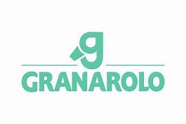

Benessere animale
Miglioramento delle condizioni degli allevamenti e riduzione dell’uso di farmaci veterinari.
Approfondimento breve legato al report.

Una pagina di sintesi dedicata alle principali azioni e ai numeri chiave del report di sostenibilità (2024), con accesso diretto al PDF ufficiale.
Granarolo è un gruppo cooperativo italiano attivo nella filiera lattiero-casearia. La sostenibilità in questo ambito riguarda anche attività “a monte” tipiche del settore primario, come allevamenti, nutrizione animale e pratiche agronomiche collegate alla produzione di latte.
L’obiettivo è sintetizzare le azioni principali e alcuni numeri chiave tratti dal Summary 2024, mantenendo sempre il collegamento al report ufficiale tramite download PDF.
Per approfondire i dati e le iniziative descritte nella pagina è possibile consultare il report completo in formato PDF.
Scarica il report PDFMiglioramento delle condizioni degli allevamenti e riduzione dell’uso di farmaci veterinari.
Approfondimento breve legato al report.
Interventi sull’alimentazione per ridurre l’impatto ambientale della produzione di latte.
Approfondimento breve legato al report.
Ottimizzazione delle pratiche agricole per favorire la cattura della CO₂.
Approfondimento breve legato al report.
Monitoraggio negli allevamenti e interventi mirati su emissioni e consumi.
Approfondimento breve legato al report.
Sviluppo della filiera del biometano ed energia rinnovabile per contribuire alla riduzione delle emissioni.
Approfondimento breve legato al report.
CO₂ eq/anno di riduzione stimata grazie al progetto biometano.
Obiettivo di riduzione delle emissioni lungo la filiera entro il 2030.
Allevamenti monitorati con attività di misurazione e miglioramento continuo.
Fonte: Report di sostenibilità Granarolo – Summary 2024.
Per approfondire: download del report completo in PDF.
Scarica il report PDF